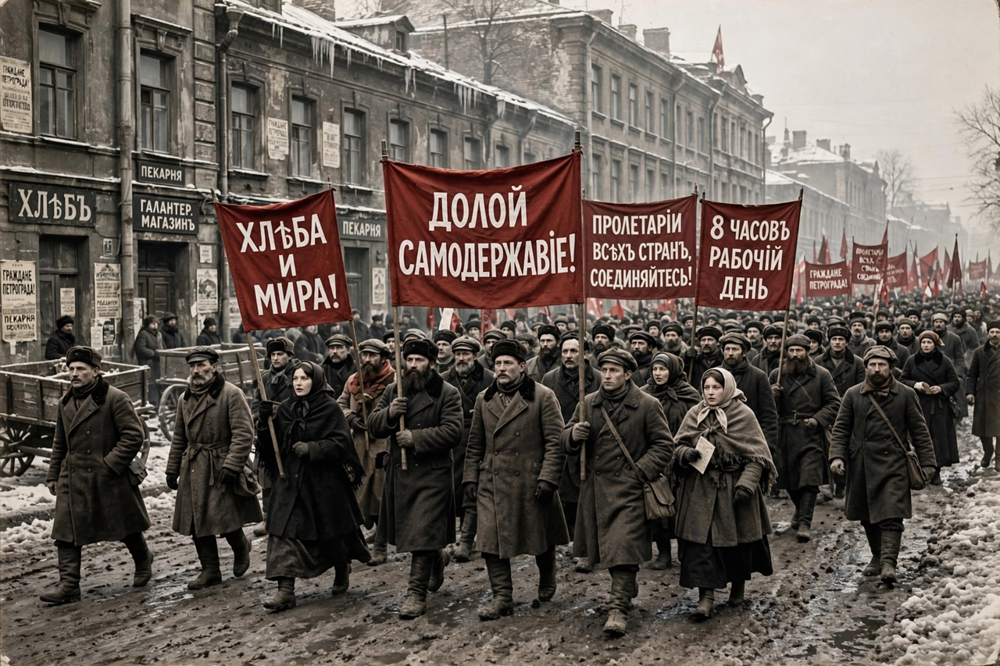

From Wikipedia, the free encyclopedia
| Dictatorship of the proletariat | |
|---|---|
 | |
| Concept of | Marxism; Marxism–Leninism |
| First used | Karl Marx, 1852 (letter to Joseph Weydemeyer) |
| Meaning | Transitional state in which the working class holds political power |
In Marxist theory, the dictatorship of the proletariat is the transitional phase between a capitalist society and a communist society in which the proletariat (working class) controls the state. Karl Marx and Friedrich Engels argued that after a socialist revolution, the workers' state would still need to suppress counter-revolution by the former ruling class, before the state itself "withers away" and a classless, stateless communist society emerges.
"Between capitalist and communist society there lies the period of the revolutionary transformation of the one into the other. Corresponding to this is also a political transition period in which the state can be nothing but the revolutionary dictatorship of the proletariat." — Marx, Critique of the Gotha Programme (1875)
Marx himself used the term sparingly and pointed to the Paris Commune of 1871 — with its elected, recallable officials — as its concrete example. Vladimir Lenin developed the concept in The State and Revolution (1917), identifying it with rule by soviets (workers' councils) and, in practice in Soviet Russia, with the leading role of the Communist Party. Critics, including Karl Kautsky and Rosa Luxemburg, warned that in practice the doctrine could justify one-party authoritarian rule; Luxemburg insisted that without unrestricted democracy, rule by a party substitutes itself for rule by the class.
The phrase was enshrined in the constitutions of the Soviet Union and other socialist states, and in China, where "people's democratic dictatorship" remains the official formula. After 1956 and especially after 1991, many Western communist and socialist parties abandoned the term in favour of purely democratic roads to socialism.
See also: Marxism · Paris Commune · Vladimir Lenin · Proletariat